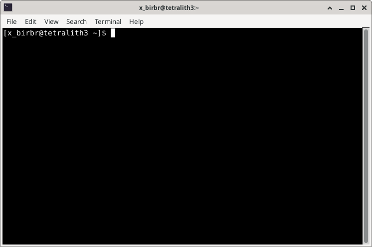

The command line interface and the shell¶
Learning objectives
Questions
- What is a Command Line Interface (CLI)?
- What is a shell?
- Why/when do I want to use it?
Objectives
- You will learn about the shell and the CLI.
- You will learn why and when you should use a CLI instead of a Graphical User Interface (GUI).

The picture above shows a terminal window where I am logged into Tetralith (NSC) (from my desktop enterprise).
The command line is an interface for typing commands directly to a computer’s operating system. It is a user interface that is navigated only with the keyboard, by typing commands at a prompt, instead of by clicking with a mouse or similar.
The Command Line Interface (CLI) is available in all operating systems, including Windows, Linux and macOS, but it is most commonly associated with Linux.
Note
In Unix or Linux, the prompt may be shown as $, %, #, or > depending on the shell.
The prompt means the shell is waiting for input from you.
The opposite of a CLI is a GUI (Graphical User Interface), which generally uses a mouse or similar for navigating.
Command line interfaces often gives access to many more capabilities than the graphical user interface does, and it is also practical and normally faster in situations where you login with a terminal on a remote system, like Tetralith as I did above.
Shell¶
As mentioned in the intro, the shell is a special user program. It is an interface between the keyboard and the operating system (OS) I.e. it takes commands input the user give from the keyboard and sends it to the OS which then performs the actions requested.
The shell we are looking at in this course is the Linux/Unix shell, which is both a command-line interpreter providing a Command Line Interface (CLI) for Unix-like systems, as well as a scripting language.
Writing scripts in a shell allows you to automate repetitive tasks or combine several tasks, making your workflow faster and more efficient. Example: you want to iterate over many files. This can be done easily in the shell.
Warning
You will find that many/most commands in this course are prefaced with either $ or [x_birbr@tetralith3 ~]$, or something like [x_birbr@tetralith3 x_birbr]$.
This is the prompt from the computer system, where $ just is the default (bash) prompt, and the others are an example of a prompt you would see when logged into a compute cluster (in this case Tetralith - my home directory versus my personal area on my project storage directory.
You can see an example of such a prompt in the picture a bit further up on the page. That is from where I am logged into “Tetralith” from my computer “enterprise”.
Do NOT copy this prompt if you are copying code snippets. It should not be included in the command.
Terminology¶
You may here words such as shell, terminal, console, and command line interface. So what are the differences? Are they the same?
Short answer:
- terminal = text input/output environment
- console = physical terminal
- shell = command line interpreter
Slightly longer answer (CLICK to read)
- Console and terminal were original an actual device much like a typewriter which was used to interact with the computer. It was sometimes called a teletypewriter (tty).
- A terminal in Linux/Unix terminology is a device file (interface to a device driver) which implements some commands (read, write, and some more). Some terminal emulators: xterm, Gnome terminal, Konsole, ssh, …
- A console is generally a terminal in the physical sense; i.e. often the primary terminal directly connected to a machine. On Linux the console appears as several terminals that can be switched between, and each of these can be named console, virtual console, virtual terminal, etc.
- A Command line interface is an interface where the user type a command and then press RETURN/ENTER to execute the command
- A shell is the main interface seen by the user when they login. It is used to start other programs. It is a command-line shell, and there are many different ones, as mentioned earlier. Command-line shells include flow control constructs to combine commands. In addition to typing commands at an interactive prompt, users can write scripts.
Try it out¶
Exercise: Open a terminal
Do one of the following:
- Tetralith
- Use an SSH client of your choice or ThinLinc
- Log in with your USERNAME:
- If you logged in with ThinLinc, open a terminal
- Any other HPC system of your choice
- Open a terminal on your own computer
Code-along: try a few commands
NOTE: These commands will all be described in more details in the next section about Navigating the File System
List some files and directories:
Create a file (name it anything - MYFILE.txt is just a placeholder):
Create a directory (name it anything - MYDIR is just a placeholder):
List your files and directories again:
Error messages¶
Error messages
If you misstype a command, or the program/script is not available, you will get an error message, like this (on Tetralith where my username is x_birbr):
it may look a little different depending on the system (on defiant where my username is bbrydsoe):
If you instead execute a command on a file which is not available (or not accessible, due to permissions), it will look like this (you can use ls to list a specific file also):
Keypoints
- A shell is a special user program. It is an interface between the keyboard and the operating system and takes input from the user and sends it to the OS which then performs the actions requested.
- We will use
bashin this course - You can run programs from the shell by entering commands at the command-line prompt
- There are many advantages to using the shell, particularly the ability to automate repetitive tasks, combine smaller tasks in a script, as well as the speed of executing commands compared with the often more resource-heavy GUI. It is also much easier to use remotely
- A difficulty with the shell can be finding out which commands exist, and how to run them